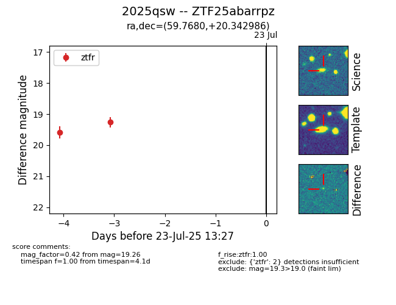

Target ZTF25abarrpz at 2025-07-23 13:27, see:
FINK: fink-portal.org/ZTF25abarrpz
Lasair: lasair-ztf.lsst.ac.uk/objects/ZTF25abarrpz
ALeRCE: alerce.online/object/ZTF25abarrpz
TNS: wis-tns.org/object/2025qsw
YSE: ziggy.ucolick.org/yse/transient_detail/2025qsw
alt names
ZTF25abarrpz (ztf,fink)
2025qsw (tns,yse)
coordinates:
equatorial (ra, dec) = (59.7680,+20.34299)
galactic (l, b) = (171.6348,-24.30341)
photometry
last ztfr=19.26
2 ztfr detections
